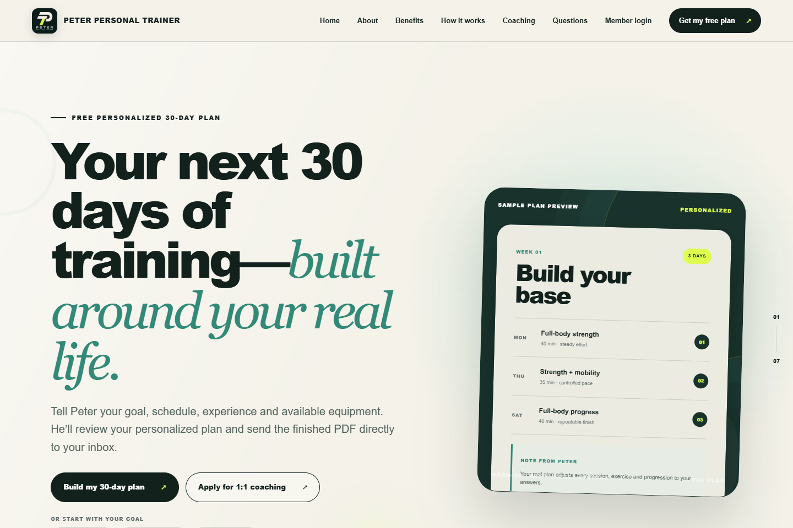

مشروع مستقل / بيتر للتدريب الشخصي
من التقييم
إلى تجربة مستمرة للأعضاء.
موقع تدريب يجمع تقييماً موجّهاً وخططاً مخصصة لمدة 30 يوماً وملفات PDF بهوية الموقع ومراجعة المدرّب وبوابة خاصة للأعضاء.
- مساهمتي
- الموقع ومسار التقييم وتسليم PDF وبوابة الأعضاء
- التركيز الهندسي
- المراجعة قبل النشر وسجلات أعضاء خاصة
- التقنيات المستخدمة
- React · TypeScript · Cloudflare D1 · Cloudflare R2 · Drizzle ORM


01 / السياق
المشكلة
يحتاج موقع التدريب إلى أكثر من التعريف بالخدمة: جمع معلومات مفيدة وإعداد خطة ومراجعتها من المدرّب وتوفير مساحة للأعضاء لمتابعة تمارينهم.
02 / مسؤولية التنفيذ
مساهمتي
طوّرت الموقع المتجاوب والتقييم الموجّه والتحقق على الخادم ومحركاً محلياً لإعداد الخطط وملفات PDF بهوية الموقع وعمليات البريد وأدوات مراجعة المدرّب. تشمل تجربة الأعضاء الدخول برمز بريد والبرامج المنشورة وسجلات التمارين والمتابعة اليومية ورسوم التقدم والصور الخاصة.
- جمع هدف العضو وجدوله والمعدات المتاحة والتحقق من الإجابات.
- إعداد مسودة خطة محلياً وملف PDF بهوية الموقع لمراجعة المدرّب.
- تسليم الخطة المراجعة ونشر البرامج المعتمدة في بوابة الأعضاء.
03 / الهندسة
القرارات وراء الواجهة
إعداد محلي ثم مراجعة
يُنتج مسار التقييم مسودة دون طلب مدفوع إلى خدمة ذكاء اصطناعي. ويُرسل ملف PDF إلى المدرّب للمراجعة قبل إرسال الخطة النهائية إلى العميل.
فصل المسودات عن البرامج المنشورة
يمكن حفظ تعديلات برامج الأعضاء بشكل خاص. ولا يظهر للعضو سوى الإصدارات التي ينشرها المدرّب، وتبقى الإصدارات المنشورة ثابتة دون تعديل.
التعامل مع بيانات الأعضاء كبيانات خاصة
تُخزَّن سجلات الأعضاء في D1، والصور والملفات في تخزين R2 خاص. لا يصل إلى الصور إلا العضو أو المدرّب بعد تسجيل الدخول؛ وتُدار تغييرات بنية البيانات عبر ترحيلات Drizzle.
04 / النتيجة
ما يقدّمه المشروع
موقع تدريب عام منشور يرتبط بمسار التقييم والمراجعة، مع بوابة خاصة لنشاط الأعضاء المستمر. ويمكن استعراض الصفحة العامة مباشرة.
زر الموقع مباشرة